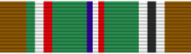

Service awardEAME
For WWII service in the European-African-Middle Eastern Theater, Dec. 7, 1941 to Nov. 8, 1945.
Check your eligibility and build your ribbon rackYou earn this by meeting the requirements. No recommendation is needed. If it's missing from your record, current members can have their MPF add it. Veterans can request it from AFPC with a Standard Form 180 and supporting documents.
This medal is awarded for service in the European-African-Middle Eastern Theater between Dec. 7, 1941 and Nov. 8, 1945, under the same conditions described under those for the Asiatic-Pacific Campaign Medal. The same also applies in awarding the Bronze Service Star and Arrowhead device.
View the list below for a listing of identified operations and timeframes associated with the award of the European-African-Middle Eastern Campaign Medal.
Air Combat, EAME Dec. 7, 1941 – Sept. 2, 1945
Egypt-Libya June 11, 1942 – Feb. 12, 1943
Air Offensive, Europe July 4, 1942 – June 5, 1944
Algeria-French Morocco Nov. 8, 1942 – Nov. 11, 1942
Tunisia (Air) Nov. 12, 1942 – May 13, 1943
Sicily (Air) May 14, 1943 – Aug. 17, 1943
Naples-Foggia (Air) Aug. 18, 1943 – Jan. 21, 1944
Anzio Jan. 22, 1944 – May 24, 1944
Rome-Arno Jan. 22, 1944 – Sept. 9, 1944
Normandy June 6, 1944 – July 24, 1944
Northern France July 25, 1944 – Sept. 14, 1944
Southern France Aug. 15, 1944 – Sept. 14, 1944
Northern Apennines Sept. 10, 1944 – April 4, 1945
Rhineland Sept. 15, 1944 – March 21, 1945
Ardennes-Alsace Dec. 16, 1944 – Jan. 25, 1945
Central Europe March 22, 1945 – May 11, 1945
Po Valley April 5, 1945 – May 8, 1945
The medal is 1.25 inches in diameter, depicting a landing scene beneath the words European-African-Middle Eastern Campaign.
The ribbon is principally dark green, edged with brown bands separated from the green by green, white, and red stripes on the left (wearer's right), and by white, black, and white stripes on the right (wearer's left). In the center are equal blue, white, and red stripes. The blue stripe is worn to the wearer's right.
Service Star
Source: European-African-Middle Eastern Campaign Medal fact sheet, Air Force's Personnel Center